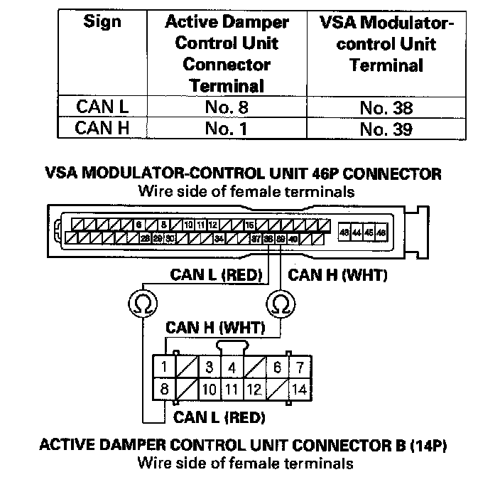

DTC 8-6
DTC 8-6: F-CAN Malfunction (Active Damper Control Unit Lost Communication with VSA Modulator-control Unit)1. Turn the ignition switch ON (II).
2. Clear the DTC with the HDS.
3. Turn the ignition switch OFF.
4. Start the engine, and wait 5 seconds.
5. Check for DTCs with the HDS.
Is DTC 8-6 indicated?
YES - Go to step 6.
NO - Intermittent failure at this time. Check for poor or loose connections between the VSA modulator-control unit and the active damper control unit.
6. Check for VSA system DTCs with the HDS.
Are any VSA system DTCs indicated?
YES - Go to the indicated DTC's troubleshooting, then go to step 17.
NO - Go to step 7.
7. Turn the ignition switch OFF.
8. Wait 30 seconds or more.
9. Disconnect the VSA modulator-control unit 46P connector.
10. Disconnect active damper control unit connector B (14P) connector.
11. Check for continuity between the active damper control unit connector B (14P) terminals and the VSA modulator-control unit 46P connector terminals individually (see table).

Is there continuity?
YES - Go to step 12
NO - Repair open in the wire between the VSA modulator-control unit and the active damper control unit.
12. Substitute a known-good active damper control unit.
13. Reconnect all connectors.
14. Turn the ignition switch ON (II).
15. Clear the DTC with the HDS.
16. Start the engine, and wait 5 seconds.
17. Check for DTCs with the HDS.
Is DTC 8-6 indicated?
YES - Replacement the VSA modulator-control unit.
NO - Replacement the original active damper control unit.